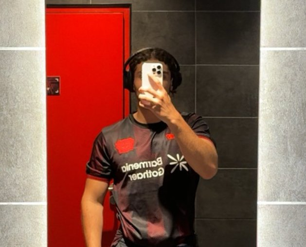
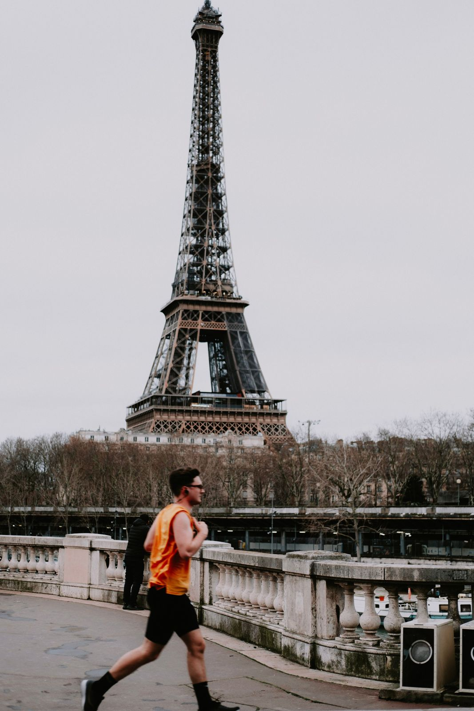

Bienvenue sur mon projet HYROX Paris
Je m'appelle Tariq Ait Oumalou, étudiant en Master 2 Management des Organisations Sportives à l'Université Paris Nanterre. Ce site présente un événement que j'étudie depuis deux ans : la course HYROX de Paris.
Qui suis-je ?
Je m'appelle Tariq, j'ai fait toute ma licence STAPS Management du sport à Nanterre et je suis maintenant en M2 MOS. À côté des cours, je passe une bonne partie de mes semaines au Voisins Football Club : j'y suis dirigenat depuis plus de cinq ans, je co-gère le pôle foot à 11 et je suis adjoint sur les U18.
Ce qui me plaît dans le sport, c'est le côté business : comment un club ou évènement trouve des partenaires, communique et fait venir du monde. C'est pour ça que travaille aussi sur des projets perso comme ScoutPro, un outil de scouting pour le foot.
Pour mon mémoire, j'ai choisi l'HYROX : « Comment l'HYROX a réinventé le sport business sans en suivre les règles ". Faire un site sur l'étape de PAris, c'était donc une suite logique.

Le Master 2 STAPS MOS
Le Master Management des Organisations Sportives (MOS) forme aux métiers du management dans le sport : clubs, fédérations, collectivités, agences et entreprises du secteur. Je suis le parcours orienté stratégie, marketing et communication sportive.
Marketing du sport
Études de marché, segmentation, stratégie de marque et sponsoring appliqués aux organisations sportives.
Communication digitale
Réseaux sociaux, création de contenus et sites web, comme ce projet réalisé en HTML et CSS.
Gestion de projet
Organisation d'événements sportifs, budgets, partenariats et pilotage d'équipes bénévoles.

Université Paris Nanterre
L'Université Paris Nanterre est l'une des grandes universités publiques d'Île-de-France. Son campus, situé à Nanterre aux portes de Paris, est desservi par le RER A.
Son UFR STAPS forme chaque année des étudiants aux métiers de l'entraînement, de l'enseignement, de l'activité physique adaptée et du management du sport, de la licence au master.